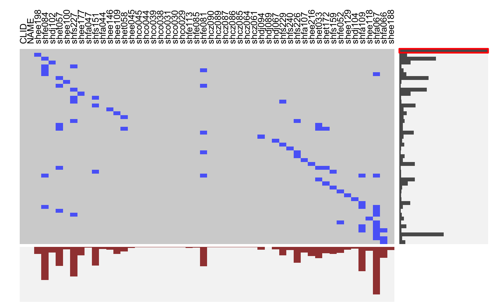
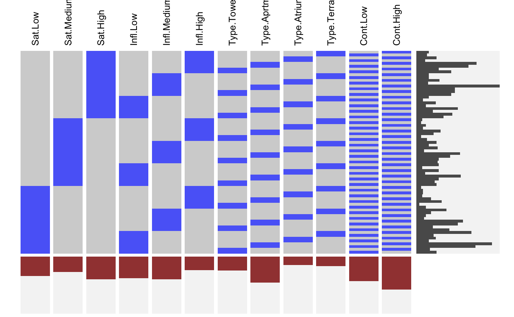
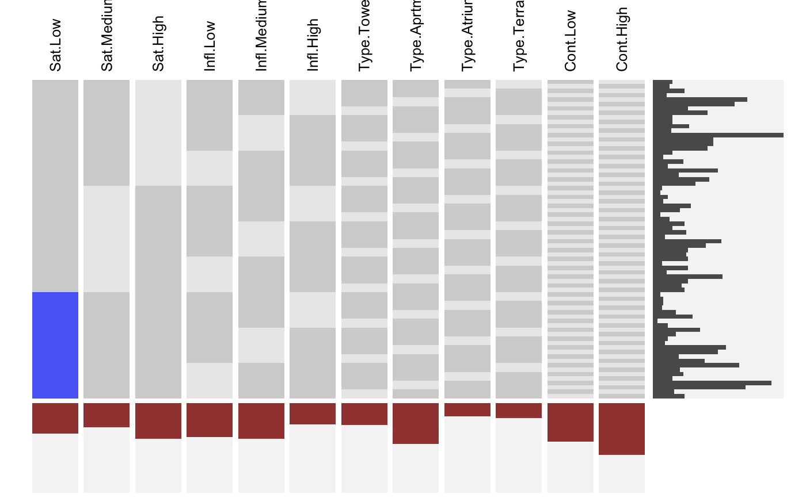
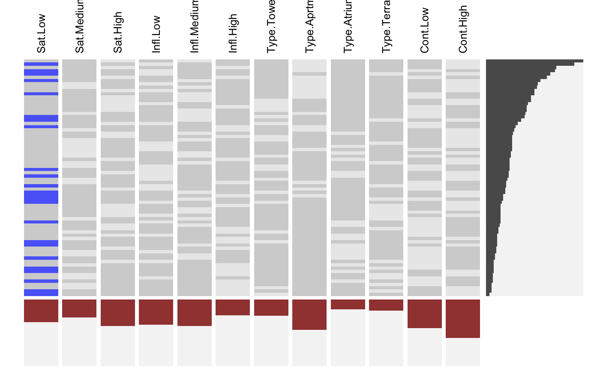

visid.RdThis function aggregates a binary dataframe or matrix using subtable and visualizes the combinations along with the marginal distributions using fluctile. Options include reordering of rows and columns, filtering the most important rows and columns aas well as ceiling censored zooming for the marginals.
Missing values can be visualized using is.na and datasets with categorical variables can be transoformed via idat.
visna(x) is a shortcut for visid( is.na(x) + 0 ).
visdf(x, freqvar) is a shortcut for visid( idat(x, allcat = TRUE, keep = freqvar) ).
visid(x, freqvar = "Freq", tp = FALSE, fr = 1, fc = 1, sort = "n",
sort.method = "count", col = "w",
mar.col = c(alpha("black", 0.7), alpha("darkred", 0.8), "red", "green"),
s = Inf, pmax = 1, opts = list(), plot = TRUE, return.data = !plot, …)
visna(x, freqvar = "Freq", tp = FALSE, fr = 1, fc = 1, sort = "n",
sort.method = "count", col = "w",
mar.col = c(alpha("black", 0.7), alpha("darkred", 0.8), "red", "green"),
s = Inf, pmax = 1, opts = list(), plot = TRUE, return.data = !plot, …)
visdf(x, freqvar = "Freq", tp = FALSE, fr = 1, fc = 1, sort = "n",
sort.method = "count", col = "w",
mar.col = c(alpha("black", 0.7), alpha("darkred", 0.8), "red", "green"),
s = Inf, pmax = 1, opts = list(), plot = TRUE, return.data = !plot, …)
| x | A binary dataframe or matrix. is.na and idat can be used to bring in missing values and categorical variables. |
||||||||||||||||||||||||||||||||||||||||||||
|---|---|---|---|---|---|---|---|---|---|---|---|---|---|---|---|---|---|---|---|---|---|---|---|---|---|---|---|---|---|---|---|---|---|---|---|---|---|---|---|---|---|---|---|---|---|
| freqvar | An optional frequency variable. If this is not found the data is aggregated usingsubtable. |
||||||||||||||||||||||||||||||||||||||||||||
| tp | Logical. Whether or not to transpose the indicator matrix for the visualization. |
||||||||||||||||||||||||||||||||||||||||||||
| fr | This controls the row filtering: Only the |
||||||||||||||||||||||||||||||||||||||||||||
| fc | See |
||||||||||||||||||||||||||||||||||||||||||||
| sort | One of |
||||||||||||||||||||||||||||||||||||||||||||
| sort.method | The default is reordering by frequency (rows) and average (columns). Other options include |
||||||||||||||||||||||||||||||||||||||||||||
| col | The color palette. For the basic indicator case only a single color is meaningful. Transfrmations via idat feature coloring by variable. |
||||||||||||||||||||||||||||||||||||||||||||
| mar.col | Colors for the marginals: rows, columns, row markers, column markers (see |
||||||||||||||||||||||||||||||||||||||||||||
| s | Ceiling censored zooming for the rows. The maximum of the scale is |
||||||||||||||||||||||||||||||||||||||||||||
| pmax | The maximum for the average/percentage scale used for the column marginal plot. |
||||||||||||||||||||||||||||||||||||||||||||
| opts | A list of options. Currently:
|
||||||||||||||||||||||||||||||||||||||||||||
| plot | Whether or not to draw the plot. |
||||||||||||||||||||||||||||||||||||||||||||
| return.data | Whether or not to return the data after filtering and reordering took place. |
||||||||||||||||||||||||||||||||||||||||||||
| … | Further arguments passed to either optME or optile. Can for instance be used to choose the reordering method. |
The filtered and reordered data or invisible(TRUE) (default).
# NOT RUN { require(reshape2) require(scales) MJ <- read.table( "http://www.rosuda.org/~pilhoefer/MJnew.txt", header=T,sep="\t",quote="") MJS <- MJ[,13:105] visid(MJS) # sort by count/percentage visid(MJS, sort="b") # sort via ME visid(MJS, sort = "b", sort.method="ME") # only rows, only columns visid(MJS, sort = "r", sort.method="ME") visid(MJS, sort = "c", sort.method="ME") # sort via optile visid(MJS, sort = "b", sort.method="optile") visid(MJS, sort = "b", sort.method="optile", iter=10) visid(MJS, sort = "b", sort.method="optile",fun="ca") # 24 rows visid(MJS, sort = "r", sort.method="optile", fr=24) # 24 rows, >= 40<!-- % columns --> visid(MJS, sort = "r", sort.method="optile", fr=24, fc = 0.4) # zoom y marginal visid(MJS, sort = "r", sort.method="optile", fr=24, s=1) # zoom x marginal visid(MJS, sort = "r", sort.method="optile", fr=24, pmax=0.1, s =0.5) # }# NA-example: GeneEx visna(GeneEx, sort = "b", sort.method="optile", fr=50, pmax=0.05, s = 2)